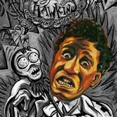

Какой-то радио-ди-джей был его менеджером в то время, и свой контракт с Хокинсом он продал за 50 долларов. Новый менеджер отнес пленку с "  ХОКИНС: Это же была баллада, вроде тех, что пели Johnny Ace или Roy Hamilton. Я ее написал в тот день, когда решил, что понял, что такое любовь. Теперь-то мне ясно, что я тогда был всего лишь невежественным пацаном, который в любви вообще ничего не понимал. Это была песня о той первой женщине в моей жизни, которая решила со мной расстаться - и как же это было больно!".Как выясняется из дальнейшего разговора, от прилежного ученика любви та первая женщина решила уйти потому, что застала его с другой женщиной, причем, явно тоже ему не неприятной. Хокинс полагал, что этой любовной песней заставит ее вернуться - и заставил!.. "Я тебя люблю. Что с того, что ты меня не хочешь. Я твой - прямо сейчас. На тебе мое заклятье, потому что ты - моя. " Женщина осталась, и спустя пару месяцев ушел он. Это да это тривиальная история! Гораздо интересней то, что продюсер решил переделать балладу в "странную" песню. Для чего решено было в студии устроить пикник. Продюсер выставил ящики бутылок мускателя и горы жареных кур. ХОКИНС: Это ответственный за репертуар и артистов фирмы "Коламбиа" сказал мне: "Сделай эту песню иначе. Не считай это работой в студии. Пусть это будет пикник. Люди приходят со свининкой, зеленью, ветчинкой, ребрышками, курочкой, мексиканскими перчиками. И любое бухло: вино, виски, бурбон, водка, джин и ром… И мы напились! Мы смеялись, рассказывали анекдоты, мы гуляли. Где-то так через час я услышал голос: "Давайте писать." А все уже с ума посходили. Mikey "Guitar" Baker наклюкался до потери сознания. Sam "The Man" Taylor", саксофонист, мунштук не мог поймать губами. Я и сам посередь веселья отрубился - а вы говорите с человеком, который больше 28 лет, до 1974 года, жил под балдой. Я пил все, что булькало. Я пил стопроцентный спирт и запивал его виски. Неделю спустя после записи я сидел дома, и мне принесли пробную копию. Я слушал ее снова и снова… Я думал, мне наврали - невероятно, чтобы это я пел так. И я решил проверить, могу ли я так петь на самом деле. Я кривил рот по-всякому, но ничего похожего не получалось… Наконец я налил себе стакан виски, опрокинул - и тогда смог сделать все то, что было на записи. Ну что ж, возможно перед микрофоном вся гоп-компания покачивались морской волной, но эти ребяттта ритттм не могли потететерять. Бесспорно, для своего времени это было ни на что не похоже. Как и было задумано, песня получилась "странной" и зажигательной. Оргазмическое гыгыгыканье в конце песни все-таки пришлось отрезать - времена еще не были готовы к полному отвязу. Это не спасло песню от запрета к проигрыванию по радио, но в кривозеркалье шоу-бизнеса запрет тут же превратился в рекламу. Лейбл "О-Кех", опубликовавший сингл, рекламировал его так: "Ди-Джеи! Смелее! Покорите своих фэнов с помощью "…Заклятья". А если вас уволят - мы найдем вам работу!" И одного ди-джея все-ж-таки уволили за эту песню - он оказался слишком продвинутым для городка под названием Чиллиуак (Chilliwack - Бивис и Батхэд оборжались бы над этим названием). Как и было предложено в рекламе, ди-джей заявился в штаб-квартиру "Коламбиа/О-Кех", сначала его пристроили на пластиночный завод, а тем временем его историю фирма напечатала в "Биллбоарде". Тут же ди-джей получил приглашение портить эфир на другой радиостанции… Все это превратилось в отличную рекламную компанию для сингла, для фирмы, для ди-джея и для пригласившей его станции… Проиграл только хороший вкус на эстраде… Если он там еще оставался. Не то, чтобы сингл расхватывали как горячие пирожки, но все-таки это была коммерческая удача. " Кстати, никакого прорыва к славе и финансам Хокинс от "…Заклятья" не ждал. |